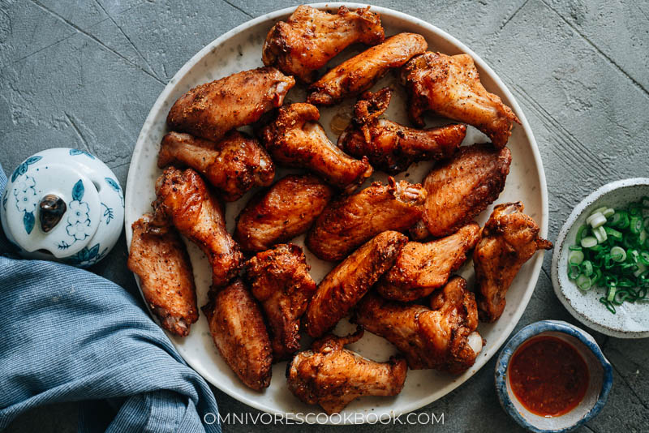

Baked Sichuan Chicken

Description
This super easy Sichuan chicken wing recipe takes no time to put together either. The cumin and Sichuan peppercorns give it a warm, heavenly fragrance and a dazzling flavor that you won’t want to stop eating. It’s just like the classic street style Chinese BBQ chicken wings. So delicious!
Ingredients
- 2 lbs (900 g) chicken wings
Spice Mix
- 1 1/2 teaspoons salt
- 1 1/2 teaspoons freshly ground Sichuan peppercorns
- 1 teaspoon cumin powder
- 1 teaspoon chili flakes
- 1 teaspoon brown sugar
- 1 teaspoon garlic powder
Instructions
- Combine the spice mix ingredients in a small bowl and stir to mix well.
- Pat dry chicken wings with a few layers of kitchen paper towel to remove any moisture on the surface. Place the chicken wings into a big bowl and pour the spice mix over them. Rub the spice mix into the wings thoroughly using your hands. Marinate for 15 minutes at room temperature, or up to overnight, covered with plastic wrap in the fridge.
- Preheat the oven to 450°F (230°C). Line a tray with foil and a wire rack. If you do not have a wire rack, you can fold the foil into a double layer and fold it like an accordion. Then place the wings on top
- Arrange the wings on the wire rack with at least a finger’s width in between, to properly let the steam off so the chicken will get crispy. Bake for 20 to 25 minutes, flipping once after 10 minutes. Cook until browned and crisp on the surface, and the juices run clear if using a paring knife to slice the thickest part of the drumstick.
- Let cool slightly and serve hot as an appetizer.
- 1 teaspoon garlic powder